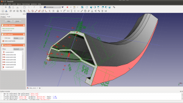

FreeCAD

a screenshot showing version 0.12 - see more screenshots
Loading latest commits...
Loading latest issues...
Loading facebook widget...
FreeCADはCAD、MCAD、CAx、CAE、PLMなどのための汎用のフィーチャーベース・パラメトリック3Dモデラーで、機械工学や製品設計だけでなく、建築やそれ以外のエンジニアリング専門分野などエンジニアリングの幅広い分野での利用に向いています。100%のオープンソースであり、高度にモジュール化されているため非常に高度な拡張、カスタマイズが可能です。
FreeCADは強力なジオメトリーカーネルであるOpenCasCadeをその基盤とし、Coin3DライブラリによるOpenInventorに準拠した3Dシーン表現モデルと幅広いPython APIをその特徴としています。インターフェイスはQtによって作成されています。FreeCADはWindows、Mac OSX、Linuxのプラットフォーム上で完全に同じ様に動作します。
 詳細はこちらから...
詳細はこちらから...
主な特徴
完全な
OpenCASCADE-Technologyベースの
ジオメトリーカーネルによって複雑な形状に対して複雑な3D操作が可能です。またBREP、NURBS、ブーリアン演算、フィレットといった概念をネィティブでサポートしています。
- モジュールアーキテクチャによってコアアプリケーションに機能追加するためのプラグイン（モジュール）を使用することが可能です。全く新しいアプリケーションと同じくらい複雑なものから、Pythonスクリプトや自己記録マクロと同じくらいシンプルなものまでさまざまな拡張機能を作成できます。
- 完全なパラメトリックモデルによって任意のパラメトリック駆動カスタムオブジェクト型を使用可能です。これらのオブジェクト型をPythonで完全にプログラムすることも可能です。
- 拘束ソルバーを持ったスケッチャーによってジオメトリー拘束された2D形状のスケッチが可能です。現在、スケッチャーでは複数の拘束ジオメトリー型を作成し、それらをFreeCADで他のオブジェクトを作成する際の土台として使うことができます。
- ロボットの動作を研究するためのロボットシミュレーションモジュールを使用可能です。ロボットモジュールには既にGUIだけでのワークフローを可能にする拡張グラフィカルインターフェイスが備わっています。
開発中
- 3Dモデルの2Dビューをシート上に配置することを可能にするドローイングシートモジュール。さらにこのモジュールはエクスポート用のSVG、PDFシートを作成します。このモジュールはまだ未完成ですが既に強力なPythonの機能を提供しています。
- 外部レンダラを使ったレンダリング用の3Dモジュールエクスポートを可能にするレンダリングモジュール。現在サポートされているのはPOV-Rayだけですが将来的には他のレンダラにも拡張される予定です。
- BIMライクなワークフローを可能にするIFCと互換性のある建築モジュール。Archモジュールの作成についてはこのコミュニティによって激しい議論が行われています。
- 複数の形状、複数ドキュメント、複数ファイル、複数の関連物での作業を可能にするアセンブリモジュール。
マニュアル
FreeCADマニュアルはFreeCADの使用についての最先端のドキュメントを提供するためにコミュニティの努力のもと常に作業が行われており、既に複数の言語で利用可能です。まだマニュアルには多くの情報が欠けています。遠慮せずに参加と貢献を行ってください！
参加しよう
参加方法
もしあなたが私たちを手助けすることに興味があるなら、FreeCADプロジェクトにはやらなければならないことがたくさんあります。C++、Pythonプログラマのためのプログラミング作業もありますが、もしコーディングできなくてもやれることはたくさんあります。ドキュメントの執筆、初心者の手助け、アプリケーションとドキュメントの翻訳、あなたの好みのオペレーティングシステム用の最新のFreeCADリリースのパッケージング、あるいはたんにあなたの周りにいる人たちがFreeCADを見つける手助けをしてくれるだけでもかまいません。FreeCADを援助するというページにもっと詳しい説明があります。
ソースコード
FreeCADはcMakeまたはautotoolsを使ってコンパイルすることができます。Gitのリンクはgit://free-cad.git.sourceforge.net/gitroot/free-cad/free-cadで、Windows、Unix/Linux、MacOSXでのビルド手順も用意されています。
開発について
何が計画されているかについては開発ロードマップをチェックしてください。次のリリースに向けた作業の進捗についてはMantisのページである変更履歴とロードマップを、またFreeCADのコードベースについてのさらに詳しい情報についてはプロジェクトの統計を見てください。開発に関わるコミュニケーションは全てフォーラムで行われているので、もし参加したいのであれば必ず訪れてください。
どこでもFreeCADをフォローしよう！


This is the documentation wiki of FreeCAD. The information contained here is what forms the offline documentation shipped with FreeCAD itself. You have two main ways to browse through the documentation: by exploring user hubs, or by following the manual. It is a work in progress, written by the community of users and developers of FreeCAD. If you find information that is wrong or missing, please help!
User hubs
Users hub: This page contains documentation useful for FreeCAD users in general: a list of all the workbenches, detailed instructions on how to install and use the FreeCAD application, tutorials, and all you need to get started.
Power users hub: This page gathers documentation for advanced users and people interested in writing python scripts. You will also find there a repository of macros, instructions on how to install and use them, and more information about customizing FreeCAD to your specific needs.
Developers hub: This section contains material for developers: How to compile FreeCAD yourself, how the FreeCAD source code is structured and how to navigate in it, and how to develop new workbenches, or embed FreeCAD in your own application.
Manual
The FreeCAD manual is another, more linear way to present the information contained in this wiki. It is made to be read like a book, and will gently introduce you to many other pages from the hubs above.
ebook versions are also available, as well as
a couple of translations in pdf format.
Table of contents
The following table lists all the articles of this wiki that form the backbone of the offline documentation shipped with the FreeCAD application. It is already available in several languages:
Get involved
How to participate
There is plenty to do inside the FreeCAD project, if you are interested in helping us. Of course, there are programming tasks for C++ or Python programmers, but there are also many things you can do even if you cannot code, such as
- writing documentation and Editing the wiki
- helping newcomers
- translating the application and documentation
- helping with the packaging of the latest release of FreeCAD for your favourite operating system
- helping other people around you to discover FreeCAD.
The help FreeCAD page describes it all with more details. Starting from 2016, FreeCAD is also participating to the Google Summer of Code. The Contributors hub page is another effort to gather the possible ways to help and contribute to the FreeCAD project.
Source code
FreeCAD can be compiled on all platforms using cMake. The source code is LGPL-licensed and hosted on GitHub. There are build instructions for Windows, Unix/Linux and MacOSX. The source code documentation is hosted here, generated by Doxygen, and documented on the wiki.
About the development
Check the Development roadmap for news about what is being planned, the Changelog and Roadmap pages on the FreeCAD tracker to see the progress towards next release, or the Project statistics for even more information about the FreeCAD codebase. All the development communication happens on the forum, so be sure to visit it if you are interested in participating.